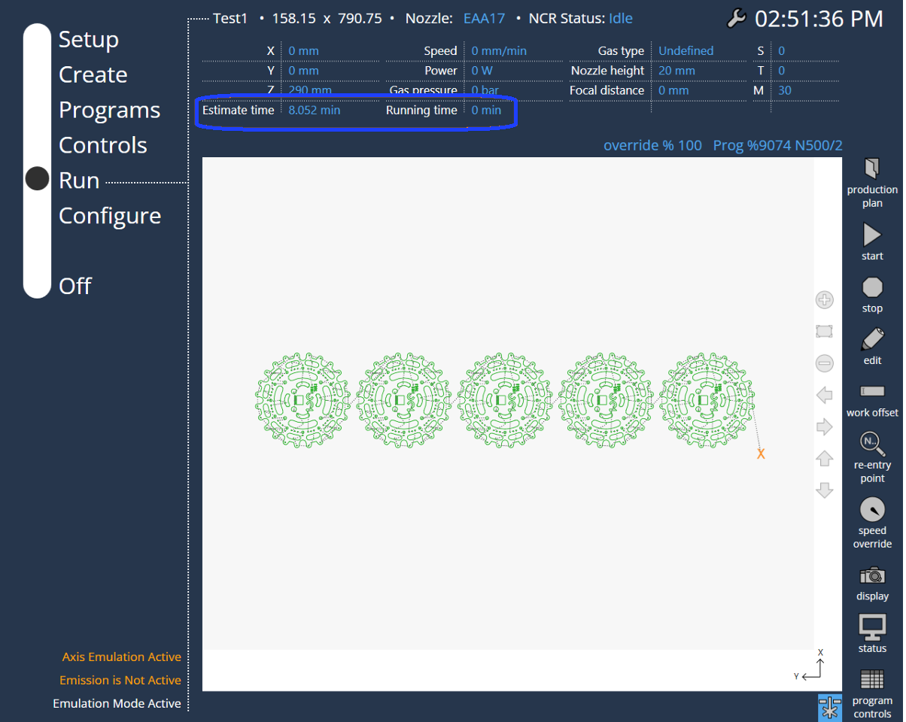

Exécuter
Sélecteur de programme
En sélectionnant le programme et en appuyant sur la touche Exécuter, l’utilisateur accède à l’onglet d’exécution. Le nom du programme, la dimension, l’état NCR et les paramètres laser (détails des axes, vitesse, pression du gaz, puissance, type de gaz, hauteur de la buse, position focale, système de coordonnées de travail actuel, système de coordonnées d’outil, fonction M utilisée) sont indiqués en haut.
-
Démarrer : Démarre le programme.
-
Pause : Met le programme en pause. Cette option n’est disponible que lorsque l’utilisateur démarre le programme.
-
Continuer : Reprend le programme en pause.
-
Arrêter ou Annuler : Arrête le programme.
-
Modifier : Modifie le programme (accède à la page de modification du programme mentionnée précédemment).

Le programme LST/layout s’affiche comme suit :

Le programme DIN s’affiche comme suit :

La plupart des informations parlent d’elles-mêmes. Le paramètre sur le côté droit de l’écran affiche les informations suivantes :
S : Décalage de travail
T : Valeur de décalage de l’outil
M : Fonction M active
Dans le cas où la programmation hors ligne génère un temps d’activation de programme, celui-ci s’affiche également à l’écran principal.

Temps d’exécution (temps d’exécution net).
Estimation du temps (Reportez-vous aux données de la programmation hors ligne).
Les informations de temps doivent être mises à jour pour le programme de signal actif actuel. Une fois qu’un programme démarre, le minutage commence, et il sera réinitialisé au démarrage d’un nouveau programme.
Asservissement de la vitesse
L’utilisateur peut utiliser les touches Asservissement + et Asservissement - pour influencer la vitesse des mouvements d’axe (en pourcentage).

-
Asservissement + : Augmente le pourcentage d’asservissement pour l’axe ou la vitesse de trajectoire configuré/défini. Au-dessus de 10 %, la valeur est modifiée par incréments de 10 %, en dessous de 10 %, elle est modifiée par incréments de 1 %.
-
Asservissement - : Réduit le pourcentage d’asservissement pour l’axe ou la vitesse de trajectoire configuré/défini. Au-dessus de 10 %, la valeur est modifiée par décréments de 10 %, en dessous de 10 %, elle est modifiée par décréments de 1 %. L’utilisateur peut également utiliser le curseur pour augmenter ou diminuer la vitesse.
L’utilisateur peut naviguer entre différents onglets pendant le fonctionnement de la machine :
Il est possible pour l’utilisateur de sortir de la page Exécuter même lorsqu’une coupe est en cours. Ceci est nécessaire car, pendant qu’un programme est en cours d’exécution, l’opérateur peut vouloir se préparer avec le prochain ensemble de programmes (modifier le programme, modifier les paramètres laser, etc.) pour la production. De plus, lorsque l’utilisateur change d’onglet pendant que le programme est en cours d’exécution, un mini-lecteur est affiché pour pour connaître l’état actuel du programme en cours, sans repasser à l’onglet Exécuter.

Affichage
L’utilisateur peut activer ou désactiver l’affichage de la tôle, de la machine et de la traversée dans le dessin.

Les messages statiques de l’API sont affichés dans le coin inférieur gauche de la page Exécuter.
Etat
L’utilisateur peut vérifier les informations du programme et la version de machine (en lecture seule).

Commandes de programme
L’utilisateur peut contrôler le programme en choisissant l’option requise lorsque le programme est en état d’exécution. Les options choisies dans les commandes de programme seront affichées dans le coin inférieur gauche.

Toutes les options dans les commandes de programme seront affichées dans le programme DIN.
Dans le programme LST/FXLYT, seules trois options sont affichées :